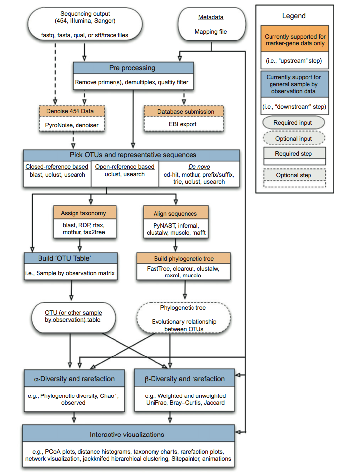

This
tutorial was written for 1.x versions of QIIME, up through QIIME 1.9.1. Outline of steps in Qiime analysisExperimentThe data we are analysing are from an experiment investigating the microbiome of fasting and non-fasting mice. The experiment includes nine samples: five controls (mouse gut microbiomes) and four experimental samples (mouse gut microbiomes from fasted mice).First Thing's First: Open the TerminalAt the terminal prompt after you have logged in to your account on the server make sure you have Python 3.5.2, then type the following command to start the Qiime environment:conda activate qiime1 To exit the virtual environment, simply run the deactivate command: source deactivate You should now be looking at a dollar sign ($) with a cursor after it. This is the command line interface for your computer. Here, you can type commands in order to "execute" programs. This Unix/Linux command line is a powerful place to analyze and process data. Everything you do in QIIME is executed through this command line interface. I'm going to assume you have some familiarity with the Unix command line, but I'll try to help you along the way with commands like cp, cd, ls, pwd, less, nano, etc. Getting Started: Get the data setGoals
In your terminal Copy the file qiime_overview_tutorial.zip to your directory from the website: here. Safe the file to your home directory on the server. Unzip the file. unzip qiime_overview_tutorial qiime_tutorial mv qiime_overview_tutorial qiime_tutorial (All one line. As long as you're reading this tutorial inside the VirtualBox, you should be able to copy-paste commands with control-c and control-shift-v. On the server terminal, you have to use shift along with control in copy/paste operations.) Now you should have a folder called qiime_tutorial in your home folder. If you look in this folder using the file browser, you should see a bunch of different files, many of which start with "Fasting_Example..." You can see these files in the terminal as well. However, first you have to navigate to that folder within the terminal, using the cd ("change directory") command like this: cd ~/qiime_tutorial Once you've entered that command, press Enter (Return). Now you should be in the directory you specified. You can always check the location of your current directory (aka folder) using the pwd command. If you type: pwd it should return something like "/Users/YourName/qiime_tutorial" as the output. To see the contents of the current folder, you can use the ls command. I like to add some options to ls, in order to get a little more information: ls -lh should give you this as an output: drwxr-xr-x+ 3 werner staff 102B Mar 5 12:24 18S_tutorial_files -rw-r--r--+ 1 werner staff 454K Mar 5 12:24 Fasting_Example.fna -rw-r--r--+ 1 werner staff 1.1M Mar 5 12:24 Fasting_Example.qual -rw-r--r--+ 1 werner staff 2.1M Mar 5 12:24 Fasting_Example.sff -rw-r--r--+ 1 werner staff 6.0M Mar 5 12:24 Fasting_Example.sff.txt -rw-r--r--+ 1 werner staff 982B Mar 5 12:24 Fasting_Map.txt The right-most column has the names of files and directories within your current folder. You can tell which entries are directories by the first column of data -- directories have a "d" in the first character of the permissions data. You will also see who owns each file, and a column listing file sizes and the date and time a file was last modified. For now we'll ignore the rwx information, but those indicate whether the owner, group of users, or all users have permission to read, write, or execute a file. The primary file format for storing sequence data supported by QIIME is the FASTA format. The file Fasting_Example.fna is in FASTA format, indicated by the suffix ".fna" which stands for FASTA nucleic acids (as opposed to amino acids which would have a suffix ".faa"). You could look at this file in a text editor (it is plain text, or ASCII, format), but many FASTA files you may work with will be too large to open in a text editor. The Unix command line offers several ways of looking at the contents of a text file without having to load the whole thing into memory. One very useful command for this is less. To use less to look at the contents of a text file, you just type less - spacebar - and then the name of the file. Try this command: less Fasting_Example.fna You should now see the first few lines of that FASTA file. You can scroll down and up using the arrow keys, or page down and up using the space bar and the "b" key. You can always return to the very top of the file by pressing "g". If you want to exit the less program, you can press "q". Notice the format of these sequence entries. Each entry starts with a line of metadata, called the header. A header always starts with a ">" symbol, followed by a unique identifier, or ID, followed by a space and then some other data. >FLP3FBN01ELBSX length=250 xy=1766_0111 region=1 run=R_2008_12_09_13_51_01_ ACAGAGTCGGCTCATGCTGCCTCCCGTAGGAGTCTGGGCCGTGTCTCAGTCCCAATGTGG CCGTTTACCCTCTCAGGCCGGCTACGCATCATCGCCTTGGTGGGCCGTTACCTCACCAAC TAGCTAATGCGCCGCAGGTCCATCCATGTTCACGCCTTGATGGGCGCTTTAATATACTGA GCATGCGCTCTGTATACCTATCCGGTTTTAGCTACCGTTTCCAGCAGTTATCCCGGACAC ATGGGCTAGG This sequence's ID is FLP3FBN01ELBSX (a unique ID assigned by the 454 pyrosequencing software). The header consists of only one line, and ends with a RETURN or NEWLINE character. Any lines following the header are sequence data. The sequence data ends for that specific entry either when a new header line is initiated with the ">" character, or with the end of the file. Press "q" to quit less. You can count how many sequences are in the file by searching for the ">" character in the file. This can be done using a program called grep, like this: grep -c ">" Fasting_Example.fna This should return "1339" -- meaning there are 1339 lines with ">" characters in them and, therefore, 1339 FASTA entries in the file. (The grep program normally searches for text lines that match the search string you enter, and the -c option asks grep to just count how many lines match, rather than displaying all the matching lines in the terminal.) You also have data on the quality of each base. The quality data are stored in a separate file that ends in the ".qual" suffix. Find that file, and look at its contents using the less command. The first entry should look like this: >FLP3FBN01ELBSX length=250 xy=1766_0111 region=1 run=R_2008_12_09_13_51_01_ 37 37 37 37 37 37 37 37 37 37 37 37 37 37 37 37 37 37 37 37 36 36 33 33 33 36 37 37 37 37 37 37 40 40 40 39 39 38 40 40 40 40 40 40 40 37 37 37 37 37 35 35 35 37 37 37 37 37 35 35 35 31 31 23 23 23 31 21 21 21 35 35 37 37 37 36 36 36 36 36 36 37 37 37 37 37 37 37 37 37 37 37 37 37 37 37 37 37 37 37 37 28 28 28 36 36 37 37 37 37 37 37 37 37 37 37 37 37 37 37 37 37 37 37 37 37 37 37 37 37 37 37 37 37 37 37 36 36 36 37 37 37 37 37 37 37 37 37 37 37 37 36 36 36 37 37 37 37 37 37 37 37 37 37 37 37 37 37 37 37 35 32 32 32 32 35 37 37 37 37 37 37 37 37 37 37 37 37 37 37 37 37 37 37 36 32 32 32 36 37 35 32 32 32 32 32 32 32 32 36 37 37 37 37 36 36 31 31 32 32 36 36 36 36 36 36 36 36 36 36 36 28 27 27 27 26 26 26 30 29 30 29 24 24 24 21 15 15 13 13 A qual file starts each entry with a header, identical to the FASTA format. Following each header is a series of numbers that denote the quality of each base (on a scale from 1 to 40). E.g., each number above corresponds with a respective base in the sequence FLP3FBN01ELBSX in the .fna file. Now, quit less and use grep to check how many entries are in this qual file -- it should also have 1339 entries. The last file we'll look at now is the sample mapping file. It is called Fasting_Map.txt and you can look at it with less if you like, though this may not be an easy way to examine the file. This file is a table of tab-delimited information, and it is specifically formatted for the QIIME software. If you perform an experiment and generate your own sequencing data, you would have to make your own mapping file. Let's look at the mapping file in a spreadsheet. That will be easier. To do this, open the file in a text editor (it is a small enough file to do this), copy all the contents into the clipboard, open a new spreadsheet, and paste in the contents. (The virtual box has a text editor and a spreadsheet, LibreOffice, built in). In LibreOffice, pasting these data will cause a dialogue box to open up. Be sure to select that the data are "Separated by" "Tab". The mapping file starts with one or more lines initiated by the "hash" symbol (#). The first of these initial lines should contain the headers, or titles, of each column of data, starting with the SampleID, followed by BarcodeSequence and the LinkerPrimerSequence. All the other columns are optional, and specific to the samples. The SampleID entries should be short, unique identifiers for your samples. They will get incorporated into the results data as you generate it. More information on the mapping file format is here and here. You can see that this sequencing experiment included nine samples: five controls (mouse gut microbiomes) and four experimental samples (mouse gut microbiomes from fasted mice). If you want to make your own mapping file for an experiment, you could do so in a spreadsheet program, making sure to save the file as a tab-delimited text file. Next Step: Trimming Barcodes |